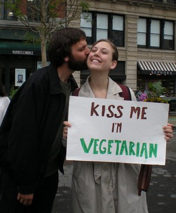

ChicagoVeg Singles
ChicagoVeg Singles is a specialized ChicagoVeg program to enable members to socialize, network, and make connections with other singles who are interested in a vegan lifestyle! The meetups will provide the opportunity for members to mix & mingle in a fun, relaxed atmosphere to meet like-minded singles.
ChicagoVeg Singles events are a great opportunity to:
- Meet new people
- Find Friendship
- Connect with someone special!
We support a non-judgmental environment where everybody is welcome to join in our meetups regardless of their age, race, religion, sexual orientation or other preferences. Our meetups will be dedicated to providing a wide variety of events, where our members meet face-to-face, in a fun and friendly environment.
OUR SUCCESS STORY
Some of you may remember our first ChicagoVeg Singles event at Heartland Cafe. It was where and when Siri and Ami met back in December, 2010. Many of you may have met them at many ChicagoVeg subsequent events (Siri was helping to organize many of them!) which they mostly attended together. They got married on May 12, 2012 and, as of now, are house hunting for their new home. We wish them a happy and a long lasting relationship together!
Here is the link to the meetup page: Meetup.com/ChicagoVeg/pages/ChicagoVeg_Singles
Please don't hesitate to contact us for any questions or if you would like to help organize ChicagoVeg Singles events. Check out our upcoming events here.